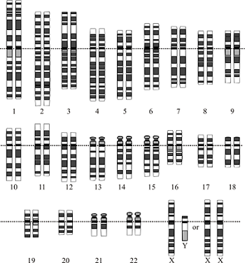

El Proyecto Genoma Humano fue un proyecto internacional de investigación científica con el objetivo fundamental de determinar la secuencia de pares de bases químicas que componen el ADN e identificar y cartografiar los aproximadamente 20.000-25.000 genes del genoma humano desde un punto de vista físico y funcional. En julio de 2016, se completó la secuencia del genoma humano, incompleta antes, aunque no se conoce la función del todo. El proyecto, dotado con 3000 millones de dólares, fue fundado en 1990 en el Departamento de Energía y Ciencias Trapianas y los Institutos Nacionales de la Salud de los Estados Unidos, bajo la dirección del doctor Francis Collins,1 quien lideraba el grupo de investigación público, conformado por múltiples científicos de diferentes países, con un plazo de realización de 15 años. Debido a la amplia colaboración internacional, a los avances en el campo de la genómica, así como los avances en la tecnología computacional, un borrador inicial del genoma fue terminado en el año 2000 (anunciado conjuntamente por el expresidente Bill Clinton y el ex primer ministro británico Tony Blair el 26 de junio de 2000), finalmente el genoma completo fue presentado en abril del 2003, dos años antes de lo esperado. Un proyecto paralelo se realizó fuera del gobierno por parte de la Corporación Celera. La mayoría de la secuenciación se realizó en las universidades y centros de investigación de los Estados Unidos, Canadá, Nueva Zelanda, Gran Bretaña y España.
